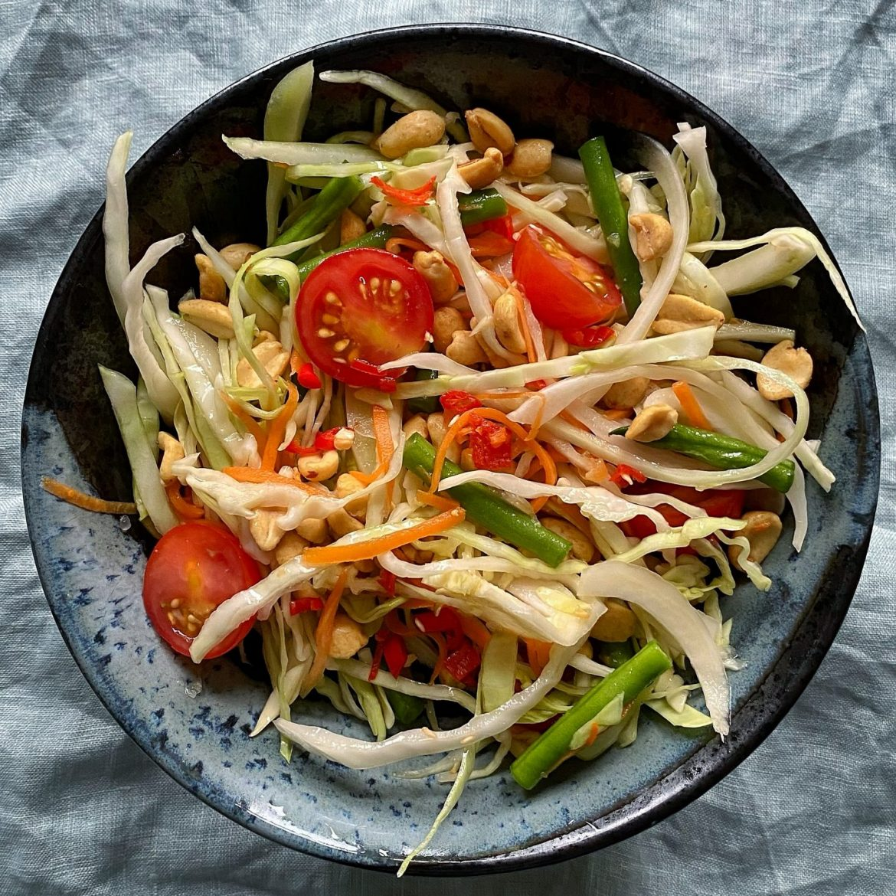

Som Tam
Thailand's Food
About Thailand's Food :
Som Tam, also known as green papaya salad, is a popular dish from Thailand. It's made with shredded unripe papaya, cherry tomatoes, green beans, peanuts, garlic, chili peppers, lime juice, fish sauce, and palm sugar. Som Tam is known for its vibrant flavors, combining sweet, sour, salty, and spicy elements. It's often served as a refreshing appetizer or side dish in Thai cuisine.
Ingredients:
- 1 small green papaya, peeled and shredded (about 2 cups)
- 2-3 cloves garlic, minced
- 2-3 Thai bird's eye chilies, minced (adjust according to spice preference)
- 2 tablespoons palm sugar or brown sugar
- 2 tablespoons fish sauce
- 2 tablespoons lime juice (about 1-2 limes)
- 1 cup cherry tomatoes, halved
- 1/2 cup long beans or green beans, cut into 1-inch pieces
- 2 tablespoons roasted peanuts, roughly chopped
- Optional: shredded carrots, shredded cabbage, or sliced cucumber for added crunch
- Optional garnishes: chopped cilantro, sliced red chili, extra peanuts
Instructions:
- Prepare the Papaya :
- Peel the green papaya and cut it into thin, julienne-like strips. You can use a julienne peeler or a sharp knife for this.
- Make the Dressing :
- In a small bowl, combine the minced garlic, minced chilies, palm sugar, fish sauce, and lime juice. Stir until the sugar is dissolved.
- Assemble the Salad :
- In a large mixing bowl, combine the shredded papaya, halved cherry tomatoes, green beans, and any optional vegetables.
- Pour the dressing over the salad ingredients and toss everything together until well combined.
- Serve :
- Transfer the salad to a serving dish or individual plates.
- Sprinkle the chopped peanuts over the top.
- If desired, garnish with additional cilantro, sliced red chili, or extra peanuts for added flavor and texture.
Serve the Som Tam immediately as a refreshing and flavorful appetizer or side dish. Adjust the seasoning to your taste preference by adding more lime juice, fish sauce, or sugar if needed. Enjoy!